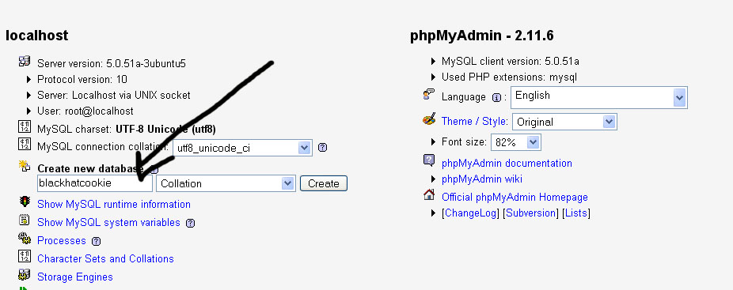
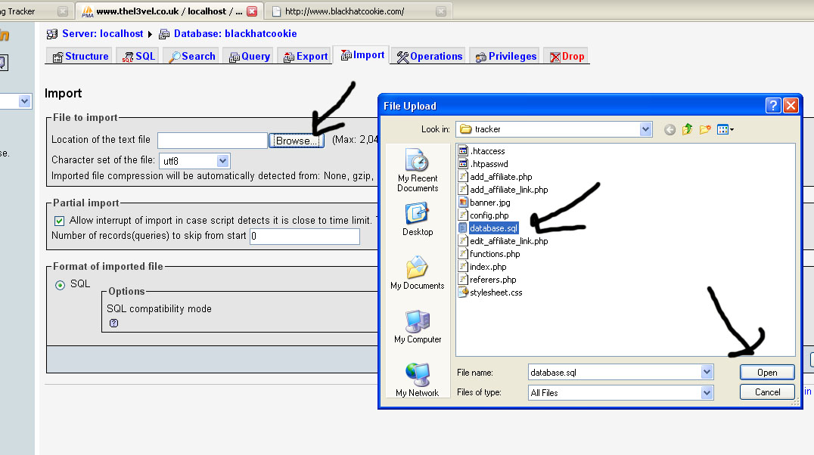

Create Database

Import SQL
Click on the Import Tab of your new database
Click Browse and Select database.sql in the tracker folder

Database Installation is complete.
Upload all files in the tracker folder to the root of your server.
be sure that you keep your directory structure intact.
The final resulting structure should look like http://www.yourdomain.com/tracker/*trackerfiles*
Now open up code.txt.
Place include "./tracker/functions.php"; af the top of your index.php file right after <?php
Place bhcookie(); anywhere after the <body> tag in your php file. In most php files, its after a header() type function.
Its now time to edit configure.php
Place the appropriate values for your sql server. Once this is completed your ready to roll.
USING BLACKBOOK
First we start by browsing to http://www.yourdomain.com/tracker/index.php

Then we have to enter our first affiliate by clicking add a new affiliate
Once that is done, you can add your first affiliate link.
Place your affiliate url in the first box, place your affiliate banner in the second box and set the CTR you wish to restrict it to
Thats it. Anytime anyone goes to your front page, it will stuff cookies whenever they come from a url on your safe referer list.
Once you start getting traffic you can click on view referer list to add new referers to your safe referers list.
By default, nobody is on your safe referer list so it will appear to not be working. Once you start to get traffic, simply add referers to your safe referers list.